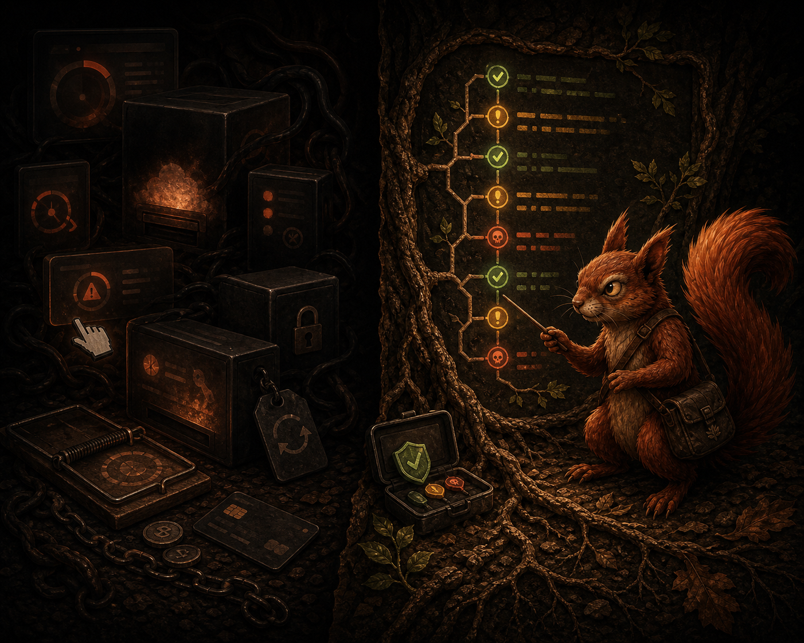
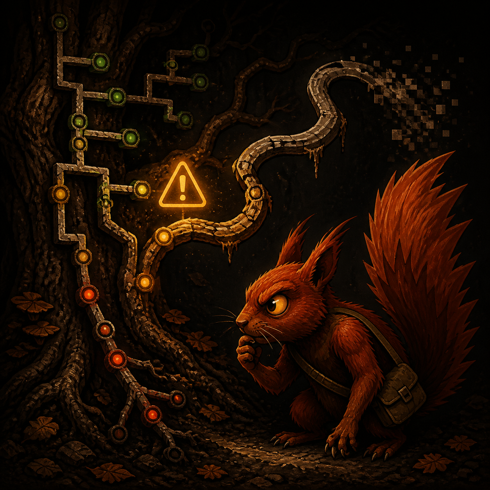

Free. Open source. Built for developers.
Disk cleaners should have to prove it.
Ratatoskr finds generated waste, explains the risk, and refuses to delete by vibes. Large is not trash. Old is not safe. Unknown stays report-only.
ratatoskr scan --path ~/Code
Read-only scan
No v1 deletion
Unknown stays report-only
ratatoskr scan
Ratatoskr found 18.4 GB of potential waste
6.1 GB safe to clean
9.8 GB requires explicit selection
2.5 GB report-only
safe
6.1 GB
cautious
9.8 GB
report-only
2.5 GB
scan
report
agent advice
you decide
Refusal model
It matters what Ratatoskr refuses to touch.
The belief
A cleaner that cannot explain itself should not be allowed near your disk.
Ratatoskr exists because developer machines are full of rebuildable junk sitting next to real data. Project folders, framework caches, dependency trees, local models, Docker state, databases, and old mistakes can look similar from far enough away.
The CLI scans and produces hard evidence. The included SKILL.md helps an AI agent rank the report without turning “large” into “delete”.
Large is not trash.
A dataset, database dump, or Photos library can be huge and absolutely not cleanup fodder.
Old is not safe.
Age is context. It never upgrades a path from suspicious to cleanable.
Cache is not a permission slip.
Safe means a narrow rule knows the owner, consequence, exclusions, and rebuild cost.
Unknown is report-only.
If Ratatoskr cannot explain the path, it points at it and keeps its teeth to itself.
AI advises. You decide.
The skill reads local reports and preserves doubt. It does not delete. It does not guess.
Rules beat vibes.
The useful output is path, size, risk, rule, reason, and consequence. Anything less is theatre.
Open source and free
No cleanup paywall. No subscription trap. The rules are inspectable because a cleaner touching local paths should not be a black box.
Built for developers
Laravel logs, Node builds, Composer vendors, package caches, Docker-adjacent risk, local models, and dependency folders with reacquisition cost.
AI-assisted, not AI-triggered
The agent explains the report and suggests the next move. Ratatoskr keeps deletion behind explicit user intent.
Main use case
I need 17 GB before this dataset can run.
The disk is full. The dataset is waiting. Panic wants a one-click cleaner. Ratatoskr does the less stupid thing.
$ ratatoskr scan --path ~/Code --format json > ratatoskr-report.json
found: 24.8 GB potential waste
safe: 7.4 GB
cautious: 15.9 GB
report-only: 1.5 GB
$ ratatoskr summary --file ratatoskr-report.json --target 17GB
Target-space projection: 15.8 GiB
Safe available: 7.4 GiB
Safe selected: 7.4 GiB
Cautious selected: 8.5 GiB
Remaining bytes: 0 B
Excluded report-only: 1.5 GiB across 3 candidatesScan the obvious trees
Start with project folders and known cache locations. Do not scan the whole home directory just because the disk is sulking.
Ask for the space you need
summary --target 17GB ranks safe candidates first, then adds the smallest useful cautious set when safe is not enough.
Inspect the tradeoff
The projection shows rebuild cost, durability, consequence, and report-only exclusions. It is a plan, not a permission slip.
The problem
Most disk cleaners are too eager.
They treat “large” as “trash”. They treat “old” as “safe”. They ask for trust before showing proof.
Ratatoskr only trusts narrow rules, known generated files, and explicit user intent.
Safe is not a category. Safe is a rule earning your trust.
Why another disk cleaner?
Because the existing ones kept asking me to trust them.
A local cleanup tool should show its work. Paths, rules, risk, consequence. Anything less is just a locked box with a delete button.

Yeah, there are plenty already.
But I was tired of limited “free” tools that scan, tease the cleanup, then sell a subscription before doing the useful part.
Yeah, closed-source tools exist.
But I do not want a black box deciding what counts as trash on a machine full of private paths, project folders, databases, and old mistakes.
Yeah, Finder can sort by size.
But “large” is not the same as disposable. A dataset, database dump, or Photos library can be huge and absolutely not cleanup fodder.
Yeah, shell commands can do this.
But I wanted repeatable rules, risk labels, JSON reports, and a shortlist I could hand to an agent without turning my disk into a dare.
Yeah, package managers clean caches.
But the real mess is spread across projects, build outputs, framework logs, coverage folders, dependencies, and stale generated junk.
Yeah, I built it for my problem.
I needed enough space to process a dataset. Ratatoskr exists for that moment: find the generated waste, explain the risk, free enough space, stop.
Yeah, AI belongs here carefully.
Not as a delete engine. As a second set of eyes on a private local report: what is safe, what is expensive, what should stay exactly where it is.
Risk model
Every finding gets a risk label before it gets anywhere near deletion.
Safe
Generated waste matched by narrow rules.
- framework logs
- build output
- package caches
Cautious
Usually rebuildable, but annoying.
- node_modules
- vendor
- local AI models
Report-only
Could be real data. Ratatoskr points. It does not bite.
- Docker volumes
- downloads
- unknown large files

Suspicious paths get skipped. Skip beats regret.
How it works
Scan first. Explain first. Decide first.
- Scan the tree
- Explain every finding
- Group by risk
- Project a target
- Hand off the report
- Skip anything suspicious
Included agent skill
AI is useful here only if it preserves doubt.
skills/ratatoskr-report-analysis/SKILL.md is a portable instruction file for Codex, Claude, Gemini, or any agent that can read local project instructions. The CLI scans. The skill reads the JSON report, ranks cleanup targets, and keeps deletion behind you.
What it is
A plain SKILL.md bundled with the repo. No hosted service. No API dependency. Just instructions an agent can load beside the report.
Who can use it
Codex skills, Claude project instructions, Gemini agents, or another local assistant workflow. If it can read a file and reason over JSON, it can use this.
What it checks first
Schema, scan roots, candidate count, totals, skipped paths, errors, duplicate physical paths, mounted volumes, and suspicious size accounting.
What it returns
Best cleanup targets, manual review targets, do-not-touch warnings, report issues, and the next command worth running.
What it refuses
No deletion. No broad cleanup commands. No pretending databases, Photos libraries, Mail stores, or unknown large files are harmless.
Codex
Use skills/ratatoskr-report-analysis/SKILL.md.
Analyze ratatoskr-report.json and the target projection.
I need 17 GB.
Tell me what to inspect first.Claude
Read skills/ratatoskr-report-analysis/SKILL.md,
then inspect ratatoskr-report.json.
Rank safe, cautious, and do-not-touch paths.
Do not suggest deletion commands yet.Gemini
Load the Ratatoskr report-analysis skill.
Use it to review this JSON report.
Return cleanup targets, risks, report issues,
and the next manual review step.Myth, lightly applied
Ratatoskr follows the branches. The rules decide what counts as rot.
The name brings the mythology. The product stays practical: resolve the path, explain the risk, skip what looks wrong.
It is a disk scanner with judgment, not a cleanup ritual.
Docs and use cases
Use Ratatoskr when disk pressure is real and guessing is expensive.
Dataset rescue
You need 17 GB now. Ratatoskr finds generated waste, then summary --target 17GB shows what to inspect first.
Project folder sweep
Scan ~/Code for build output, framework logs, coverage, dependency folders, and caches without touching personal files.
Before deleting anything
Export JSON, inspect the risk groups, and make the exact manual action list boring before anything moves.
Scanner QA
Use the skill to spot noisy rules, bad size accounting, duplicate paths, and report gaps that should become implementation work.
AI handoff
Give the report and target projection to an agent when you want a second pass that preserves the warnings, not a cheerful demolition order.
Commands
The useful surface area stays small.
Milestone 1 is scan-only. Cleaning can wait until the scan is boringly reliable.
ratatoskr scanratatoskr scan --path ~/Coderatatoskr scan --path ~/Code --format json > ratatoskr-report.jsonratatoskr summary --file ratatoskr-report.json --target 17GBratatoskr summary --file ratatoskr-report.json --target 17GB --format jsonratatoskr rulesratatoskr report --path ~/Code --format jsoncodex use ratatoskr-report-analysis ratatoskr-report.jsonratatoskr scan
Run a read-only scan. Defaults to the current directory when --path is omitted.
--path <path>- Scan one explicit path.
--format text|json- Choose output format. Default:
text. --allow-system-root- Allow an explicit read-only scan from
/. Sharp object. Use deliberately.
ratatoskr report
Run a fresh scan and render a report. JSON is the normal handoff format for the analysis skill.
--path <path>- Scan one explicit path.
--format json- Report output format. Current supported value:
json. --stream- Stream JSON candidates and print scan progress to stderr.
--allow-system-root- Allow an explicit read-only scan from
/.
ratatoskr summary
Summarize an existing JSON report without rescanning. Add a target when you need to know what to inspect first.
--file <report.json>- Required. Reads a Ratatoskr scan report.
--limit <n>- Number of candidates per section. Default:
20. --target <size>- Read-only target-space projection, like
500MB,1.5GB, or2GiB. --target-bytes <n>- Compatibility/debug target input in bytes.
--targetwins when both are present. --format text|json- Choose summary output format. JSON includes
target_projectionwhen target mode is used.
ratatoskr rules
List active built-in rules with source, category, risk, path patterns, exclusions, reason, consequence, and default cleanability.